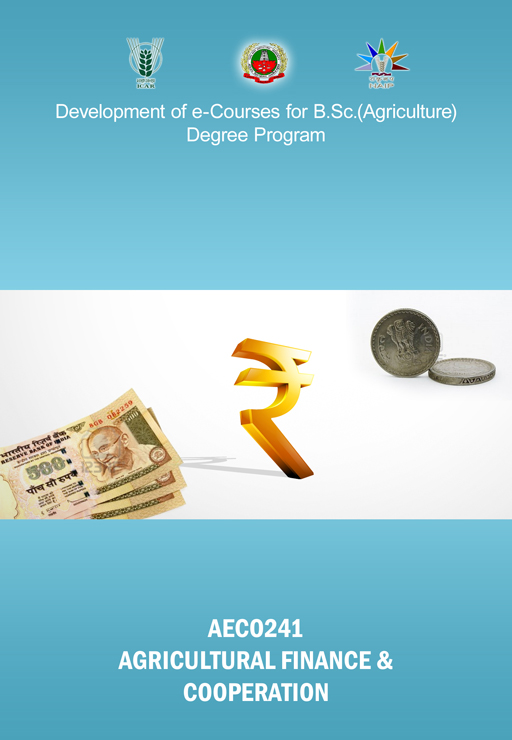

AGRICULTURAL FINANCE AND CO-OPERATION
:: (
AECO241
) :: Credits 3 (2+1)

Select the lecture topic...
Lec 01 -
Nature and Scope
Lec 02 -
Time Value of Money
Lec 03 -
Agricultural Credit
Lec 04 -
Credit Analysis
Lec 05 -
History of Financing Agri ...
Lec 06 -
Commercial Banks
Lec 07 -
Regional Rural Banks
Lec 08 -
Higher Financing Institutions
Lec 09 -
Insurance and Credit ...
Lec 10 -
Crop Insurance
Lec 11 -
Agricultural Cooperation - ...
Lec 12 -
Reorganisation of Co ...
Lec 13 -
Successful Cooperative Sys ...